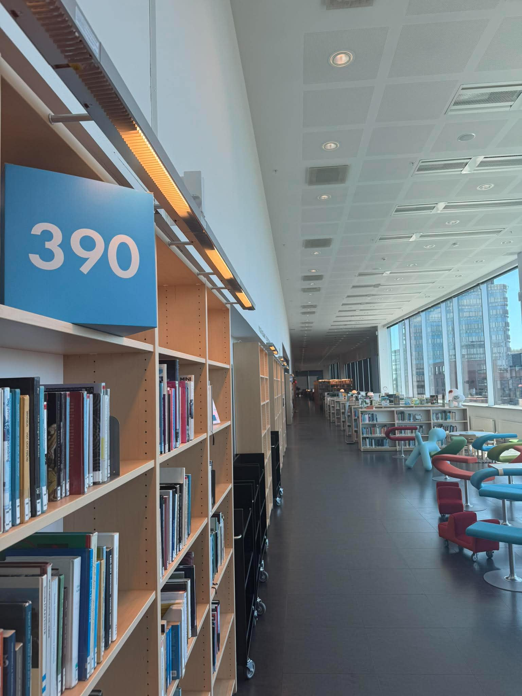

MALMÖ
24-årig pyroman döms till fängelse
Publicerad 3 december 2011 - kl 11:27
Den 24-årige universitetsstudent som tidigare misstänks ha anlagt tre bränder i Malmö i oktober
dömdes
idag till fängelse för grov allmänfarlig ödeläggelse och mordbrand. Han frias dock för anklagelserna
om
förberedelse till allmänfarlig ödeläggelse. Han häktades i november, på sannolika skäl som är den
starkare misstankegraden.
Rätten slår fast att den dömde är gärningsmannen bakom de
tre
bränderna som anlagts tidigt i oktober, varav en av dessa i ett flerfamiljshus. Den nu dömde
24-åringen
har den senaste tiden varit bosatt alldeles i närheten av brottsplatserna. Vid gripandet kunde
polisen
säkra teknisk bevisning som man ansåg pekade mot att gärningsmannen planerat fler dåd, men detta
kunde
inte fastslås av tingsrätten.
En rättspsykiatrisk utredning slog nyligen fast att mannen inte anses lida av en allvarlig psykisk
störning. Den dömde mannen nekar till brott.

Biblioteket i Malmö universitetssbyggnad Orkanen
P4 Malmö
Ansvarig utgivare: Liselotte